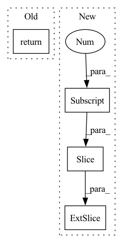

Pattern ID :4954

Before Change
else:
seq_mask = None
return att_feats, seq, att_masks, seq_mask
def _forward(self, fc_feats, att_feats, seq, att_masks=None, labels=None):
att_feats, seq, att_masks, seq_mask = self._prepare_feature_forward(att_feats, att_masks, seq, labels)
After Change
cur_query_matrix = torch.stack(cur_query_matrix, 0)
//print("111",query_matrix[i, :cur_query_matrix.shape[0], :].shape, cur_query_matrix.shape)
query_matrix[i, :cur_query_matrix.shape[0], :] = cur_query_matrix
cmn_masks[i, :, :cur_query_matrix.shape[0]] = 1
responses = self.cmn(att_feats, query_matrix, query_matrix, cmn_masks)
//embeddings = embeddings + responses
In pattern: SUPERPATTERN
Frequency: 3
Non-data size: 4
Instances
Fragment ID: 17385785
Project Name: markin-wang/xpronet
Commit Name: f1eadeb44fcd3ca935352b9cc7d30eab0fa8c753
Time: 2021-11-21
Author: cserwj@gmail.com
File Name: modules/base_cmn.py
M Class Name: BaseCMN
N Class Name: BaseCMN
M Method Name: _prepare_feature_forward(5)
N Method Name: _prepare_feature_forward(5)
M Parent Class: AttModel
N Parent Class: AttModel
M File Name: modules/base_cmn.py
N File Name: modules/base_cmn.py
M Start Line: 402
M End Line: 451
N Start Line: 391
N End Line: 444
'>
Before Change
).to(input.device)
output = stretcher(output)
output = torch.istft(output[0], self._n_fft)
return output
After Change
output = stretcher(output)
output = torch.istft(output[0], self._n_fft)
if output.shape[1] >= input.shape[1]:
return output[:, : (input.shape[1])]
return pad(output, pad=(0, 0, 0, input.shape[1] - output.shape[1]))
'>
Fragment ID: 17385790
Project Name: kentonishi/torch-pitch-shift
Commit Name: 886bf79de908cb17a3768a3897b42c8fe0541279
Time: 2021-06-18
Author: kento24gs@outlook.com
File Name: torch_pitch_shift/main.py
M Class Name: PitchShifter
N Class Name: PitchShifter
M Method Name: __call__(4)
N Method Name: __call__(4)
M Parent Class:
N Parent Class:
M File Name: torch_pitch_shift/main.py
N File Name: torch_pitch_shift/main.py
M Start Line: 100
M End Line: 101
N Start Line: 101
N End Line: 104
'>
Before Change
logits = self.layers[-1](blocks[-1], h).mean(1)
return logits
After Change
h = self.layers[l](blocks[l], h).flatten(1, -1)
if h_last is not None:
h += h_last[: h.shape[0], :]
h_last = h
'>
Fragment ID: 17385792
Project Name: ytchx1999/maxp_dgl_graph
Commit Name: 880fef62dc7b31a2f406895038f16195662ebab0
Time: 2021-10-13
Author: 54234005+ytchx1999@users.noreply.github.com
File Name: gnn/models.py
M Class Name: GraphAttnModel
N Class Name: GraphAttnModel
M Method Name: forward(3)
N Method Name: forward(3)
M Parent Class: thnn.Module
N Parent Class: thnn.Module
M File Name: gnn/models.py
N File Name: gnn/models.py
M Start Line: 222
M End Line: 227
N Start Line: 229
N End Line: 249